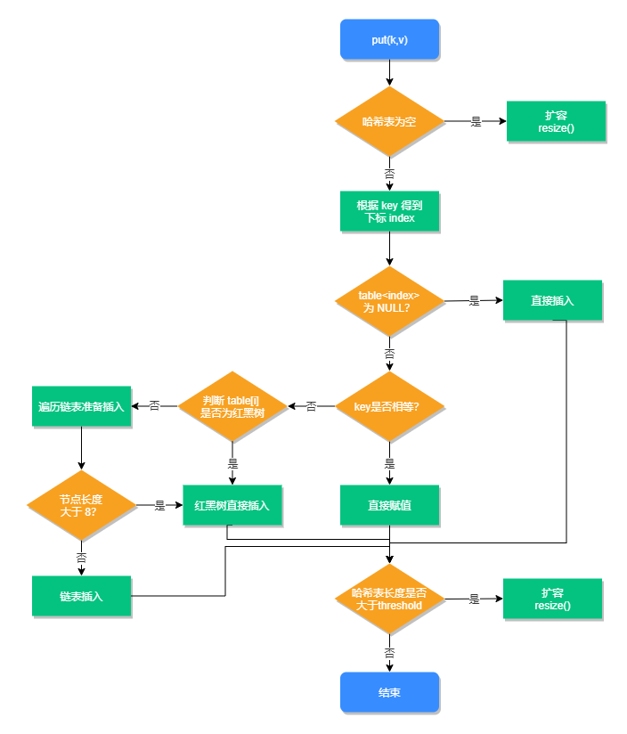

HashMap 是使用频率最高的类型之一，同时也是面试经常被问到的问题之一，这是因为HashMap
的知识点有很多，同时它又属于Java基础知识的一部分，因此在面试中经常被问到。
本课时的面试题是，HashMap底层是如何实现的？在JDK1.8中它都做了哪些优化？
典型回答
在JDK1.7中HashMap是以数组加链表的形式组成的，JDK1.8之后新增了红黑树的组成结构，当链表大于8时，链表结构会转换成红黑树结构，它的组成结构如下图所示：
数组中的元素我们称之为哈希桶，它的定义如下：
1
2
3
4
5
6
7
8
9
10
11
12
13
14
15
16
17
18
19
20
21
22
23
24
25
26
27
28
29
30
31
32
33
34
35
36
37
38
39
40
| static class Node<K,V> implements Map.Entry<K,V> {
final int hash;
final K key;
V value;
Node<K,V> next;
Node(int hash, K key, V value, Node<K,V> next) {
this.hash = hash;
this.key = key;
this.value = value;
this.next = next;
}
public final K getKey() { return key; }
public final V getValue() { return value; }
public final String toString() { return key + "=" + value; }
public final int hashCode() {
return Objects.hashCode(key) ^ Objects.hashCode(value);
}
public final V setValue(V newValue) {
V oldValue = value;
value = newValue;
return oldValue;
}
public final boolean equals(Object o) {
if (o == this)
return true;
if (o instanceof Map.Entry) {
Map.Entry<?,?> e = (Map.Entry<?,?>)o;
if (Objects.equals(key, e.getKey()) &&
Objects.equals(value, e.getValue()))
return true;
}
return false;
}
}
|
可以看出每个哈希桶中包含了四个字段：hash、key、value、next，其中next 表示链表的下一个节点。
JDK 1.8之所以添加红黑树是因为一旦链表过长，会严重影响 HashMap的性能，而红黑树具有快速增删改查的特点，这样就可以有效的解决链表过长时操作比较慢的问题。
考点分析
上面大体介绍了HashMap的组成结构，但面试官想要知道的远远不止这些，和HashMap相关的面试题还有以下几个：
- JDK 1.8 HashMap 扩容时做了哪些优化？
- 加载因子为什么是0.75？
- 当有哈希冲突时，HashMap是如何查找并确认元素的？
- HashMap 源码中有哪些重要的方法？
- HashMap是如何导致死循环的？
知识扩展
1.HashMap源码分析
声明：本系列课程在未做特殊说明的情况下，都是以目前主流的JDK版本1.8为例来进行源码分析的。
HashMap源码中包含了以下几个属性：
1
2
3
4
5
6
7
8
9
10
11
12
13
14
15
16
17
|
static final int DEFAULT_INITIAL_CAPACITY = 1 << 4;
static final int MAXIMUM_CAPACITY = 1 << 30;
static final float DEFAULT_LOAD_FACTOR = 0.75f;
static final int TREEIFY_THRESHOLD = 8;
static final int UNTREEIFY_THRESHOLD = 6;
static final int MIN_TREEIFY_CAPACITY =
|
什么是加载因子？加载因子为什么是0.75？
加载因子也叫扩容因子或负载因子，用来判断什么时候进行扩容的，假如加载因子是0.5，HashMap
的初始化容量是16，那么当HashMap中有16*0.5=8个元素时，HashMap就会进行扩容。
那加载因子为什么是0.75而不是0.5或者1.0呢？
这其实是出于容量和性能之间平衡的结果：
- 当加载因子设置比较大的时候，扩容的门槛就被提高了，扩容发生的频率比较低，占用的空间会比较小，但此时发生Hash冲突的几率就会提升，因此需要更复杂的数据结构来存储元素，这样对元素的操作时间就会增加，运行效率也会因此降低；
- 而当加载因子值比较小的时候，扩容的门槛会比较低，因此会占用更多的空间，此时元素的存储就比较稀疏，发生哈希冲突的可能性就比较小，因此操作性能会比较高。
所以综合了以上情况就取了一个0.5到1.0的平均数0.75作为加载因子。
HashMap源码中三个重要方法：查询、新增和数据扩容。
先来看查询源码：
1
2
3
4
5
6
7
8
9
10
11
12
13
14
15
16
17
18
19
20
21
22
23
24
25
26
27
28
29
| public V get(Object key) {
Node<K,V> e;
return (e = getNode(hash(key), key)) == null ? null : e.value;
}
final Node<K,V> getNode(int hash, Object key) {
Node<K,V>[] tab; Node<K,V> first, e; int n; K k;
if ((tab = table) != null && (n = tab.length) > 0 &&
(first = tab[(n - 1) & hash]) != null) {
if (first.hash == hash &&
((k = first.key) == key || (key != null && key.equals(k))))
return first;
if ((e = first.next) != null) {
if (first instanceof TreeNode)
return ((TreeNode<K,V>)first).getTreeNode(hash, key);
do {
if (e.hash == hash &&
((k = e.key) == key || (key != null && key.equals(k))))
return e;
} while ((e = e.next) != null);
}
}
return null;
}
|
从以上源码可以看出，当哈希冲突时我们需要通过判断key值是否相等，才能确认此元素是不是我们想要的元素。
HashMap第二个重要方法：新增方法，源码如下：
1
2
3
4
5
6
7
8
9
10
11
12
13
14
15
16
17
18
19
20
21
22
23
24
25
26
27
28
29
30
31
32
33
34
35
36
37
38
39
40
41
42
43
44
45
46
47
48
49
50
51
52
53
54
55
56
57
| public V put(K key, V value) {
return putVal(hash(key), key, value, false, true);
}
final V putVal(int hash, K key, V value, boolean onlyIfAbsent,
boolean evict) {
Node<K,V>[] tab; Node<K,V> p; int n, i;
if ((tab = table) == null || (n = tab.length) == 0)
n = (tab = resize()).length;
if ((p = tab[i = (n - 1) & hash]) == null)
tab[i] = newNode(hash, key, value, null);
else {
Node<K,V> e; K k;
if (p.hash == hash &&
((k = p.key) == key || (key != null && key.equals(k))))
e = p;
else if (p instanceof TreeNode)
e = ((TreeNode<K,V>)p).putTreeVal(this, tab, hash, key, value);
else {
for (int binCount = 0; ; ++binCount) {
if ((e = p.next) == null) {
p.next = newNode(hash, key, value, null);
if (binCount >= TREEIFY_THRESHOLD - 1)
treeifyBin(tab, hash);
break;
}
if (e.hash == hash &&
((k = e.key) == key || (key != null && key.equals(k))))
break;
p = e;
}
}
if (e != null) {
V oldValue = e.value;
if (!onlyIfAbsent || oldValue == null)
e.value = value;
afterNodeAccess(e);
return oldValue;
}
}
++modCount;
if (++size > threshold)
resize();
afterNodeInsertion(evict);
return null;
}
|
新增方法的执行流程，如下图所示：

HashMap 第三个重要的方法是扩容方法，源码如下：
1
2
3
4
5
6
7
8
9
10
11
12
13
14
15
16
17
18
19
20
21
22
23
24
25
26
27
28
29
30
31
32
33
34
35
36
37
38
39
40
41
42
43
44
45
46
47
48
49
50
51
52
53
54
55
56
57
58
59
60
61
62
63
64
65
66
67
68
69
70
71
72
73
74
75
76
77
78
79
80
81
82
83
84
85
86
87
88
89
90
91
| final Node<K,V>[] resize() {
Node<K,V>[] oldTab = table;
int oldCap = (oldTab == null) ? 0 : oldTab.length;
int oldThr = threshold;
int newCap, newThr = 0;
if (oldCap > 0) {
if (oldCap >= MAXIMUM_CAPACITY) {
threshold = Integer.MAX_VALUE;
return oldTab;
}
else if ((newCap = oldCap << 1) < MAXIMUM_CAPACITY &&
oldCap >= DEFAULT_INITIAL_CAPACITY)
newThr = oldThr << 1;
}
else if (oldThr > 0)
newCap = oldThr;
else {
newCap = DEFAULT_INITIAL_CAPACITY;
newThr = (int)(DEFAULT_LOAD_FACTOR * DEFAULT_INITIAL_CAPACITY);
}
if (newThr == 0) {
float ft = (float)newCap * loadFactor;
newThr = (newCap < MAXIMUM_CAPACITY && ft < (float)MAXIMUM_CAPACITY ?
(int)ft : Integer.MAX_VALUE);
}
threshold = newThr;
@SuppressWarnings({"rawtypes","unchecked"})
Node<K,V>[] newTab = (Node<K,V>[])new Node[newCap];
table = newTab;
if (oldTab != null) {
for (int j = 0; j < oldCap; ++j) {
Node<K,V> e;
if ((e = oldTab[j]) != null) {
oldTab[j] = null;
if (e.next == null)
newTab[e.hash & (newCap - 1)] = e;
else if (e instanceof TreeNode)
((TreeNode<K,V>)e).split(this, newTab, j, oldCap);
else {
Node<K,V> loHead = null, loTail = null;
Node<K,V> hiHead = null, hiTail = null;
Node<K,V> next;
do {
next = e.next;
if ((e.hash & oldCap) == 0) {
if (loTail == null)
loHead = e;
else
loTail.next = e;
loTail = e;
}
else {
if (hiTail == null)
hiHead = e;
else
hiTail.next = e;
hiTail = e;
}
} while ((e = next) != null);
if (loTail != null) {
loTail.next = null;
newTab[j] = loHead;
}
if (hiTail != null) {
hiTail.next = null;
newTab[j + oldCap] = hiHead;
}
}
}
}
}
return newTab;
}
|
从以上源码可以看出，JDK1.8在扩容时并没有像JDK1.7那样，重新计算每个元素的哈希值，而是通过高位运算（e.hash&oldCap）来确定元素是否需要移动，比如key1的信息如下：
- key1.hash=10 0000 1010
- oldCap=16 00010000
使用e.hash&oldCap得到的结果高一位为0，当结果为0时表示元素在扩容时位置不会发生任何变化，而key 2信息如下：
- key2.hash=10 0001 0001
- oldCap=1600010000
这时候得到的结果高一位为1，当结果为1时，表示元素在扩容时位置发生了变化，新的下标位置等于原下标位置+原数组长度，如下图所示：

其中红色的虚线图代表了扩容时元素移动的位置。
2.HashMap 死循环分析
以JDK1.7为例，假设HashMap默认大小为2，原本HashMap中有一个元素key（5），我们再使用两个线程：t1添加元素key（3），t2添加元素key（7），当元素key（3）和key（7）都添加到HashMap
中之后，线程t1在执行到Entry<K，V>next=e.next；时，交出了CPU的使用权，源码如下：
1
2
3
4
5
6
7
8
9
10
11
12
13
14
15
| void transfer(Entry[] newTable, boolean rehash) {
int newCapacity = newTable.length;
for (Entry<K,V> e : table) {
while(null != e) {
Entry<K,V> next = e.next;
if (rehash) {
e.hash = null == e.key ? 0 : hash(e.key);
}
int i = indexFor(e.hash, newCapacity);
e.next = newTable[i];
newTable[i] = e;
e = next;
}
}
}
|
那么此时线程t1中的e指向了key（3），而next 指向了key（7）；之后线程t2重新rehash 之后链表的顺序被反转，链表的位置变成了key（5）→key（7）→key（3），其中“→”用来表示下一个元素。
当t1重新获得执行权之后，先执行newTalbe[i]=e把key（3）的next 设置为key（7），而下次循环时查询到key（7）的next 元素为key（3），于是就形成了key（3）和key（7）的循环引用，因此就导致了死循环的发生，如下图所示：
当然发生死循环的原因是JDK1.7链表插入方式为首部倒序插入，这个问题在JDK1.8得到了改善，变成了尾部正序插入。
有人曾经把这个问题反馈给了Sun公司，但Sun公司认为这不是一个问题，因为HashMap本身就是非线程安全的，如果要在多线程下，建议使用ConcurrentHashMap替代，但这个问题在面试中被问到的几率依然很大，所以在这里需要特别说明一下。
小结
本课时介绍了HashMap的底层数据结构，在JDK1.7时HashMap是由数组和链表组成的，而JDK
1.8则新增了红黑树结构，当链表的长度大于8时会转换为红黑树存储，以提升元素的操作性能。同时还介绍了HashMap的三个重要方法，查询、添加和扩容，以及JDK1.7 resize0在并发环境下导致死循环的原因。